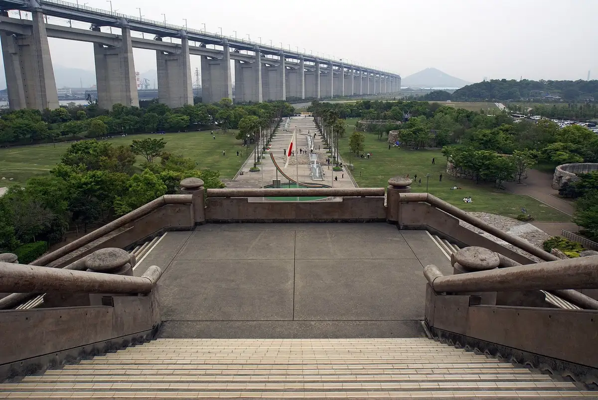
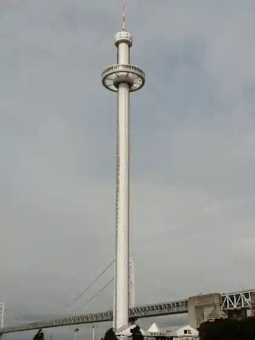
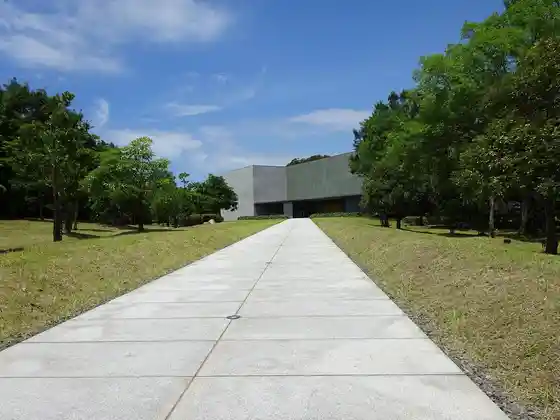
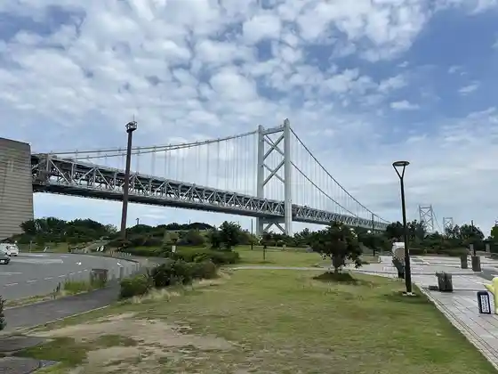
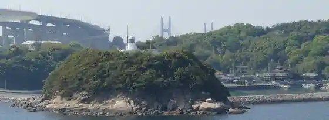

Sakaide
Sakaide · Kagawa
Sakaide
Highlighted on the Kagawa map.

Stay
Irori no Yado Ki Daiko ^
O Henro Hausu Yasoba / Minpaku
Gamo Ie
Guest House Sakaideki Maedate
Bijinesu Hotel Misaki
Hotel Nyusenchurii Sakaide
Hotel Rutoin Sakaide Kita Inta
Resort Hotel JR Sakaide Eki Kara Toho 7 Fun ^
Kyuka Village Sanuki Goshiki Dai
Sakaide Gu Land Hotel
Sakaide Plaza Hotel
Ryokan Miki
Ryokan Kume Himawari So
Ryokan Kawakyu Kome
Yumoto Sanuki Setoohashi Onsen
Misaki Ryokan
BAY MARINA Roguhausu ^
HOTEL R9 The Yard Sakaide
MYTH‐S
MYTH-J
MYTH-W
Dining
Sanuki Udon Gamo
Nichi no Shutsu Seimen Tokoro
Yamashita Udon
Yanagi Ya Nishi Ohama Mise
Toraya
Maidomaido
Menya Shichi Fuku Bettei
Teuchi Chiudon Kamaya
Sanukimarufuji
Udon
Teuchi Udon Machikawa
Uerinton
Shimizuya
Hokusei
Onsen
Bijinesu Hotel Misaki Public Bath
Hotel Rutoin Sakaide Kita Inta Public Bath
Kyuka Village Sanuki Goshiki Dai Public Bath
Sakaide Gu Land Hotel Public Bath
Ryokan Kume Himawari So Public Bath
Ryokan Kawakyu Kome Public Bath
Yumoto Sanuki Setoohashi Onsen Setochiso Public Bath
Misaki Ryokan Public Bath
Experience
Roadside Station Setoohashi Memorial Park
Sights
Seto Bridge
Setoohashi Memorial Park
Setoohashi Tawa

Higashiyama Kaii Setochi Art Museum

Yo Shima

Nabeshima Lighthouse

Iino Yama
Shiramine Tera
Saya Shima